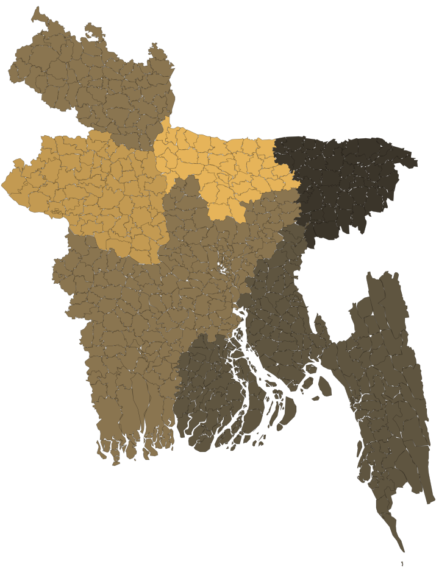

5%
of GDP for health
A gradual rise in health spending.

The government’s six-month health scorecard lists repairs, recruitment steps and plans for reform. It does not mention measles.
This report follows the distance between those promises and the care people received: an outbreak that kept sending children to hospital, families paying for treatment, and a health system short of the staff and services they needed.
The manifesto’s 22 healthcare proposals promised a different experience of public care: more workers, a digital record, treatment closer to home and a gradual rise in spending. These six commitments set the direction. They are promises for a five-year term; the government’s own 180-day targets show where it chose to begin.
Six commitments to follow
A gradual rise in health spending.
Recruitment to expand the workforce.
A universal digital health record.
Quality primary care through stronger upazila services.
Decentralised cancer, kidney and heart care.
Safety and professional development for those providing care.
The health minister and state minister on staffing, vaccines and the services they wanted to change.
28 dated statements, from February to September 2026. Open a book to read that month’s record.
On day 180, the Health Services Division published its progress against 12 manifesto commitments. Each entry below sets out the pledge, the target the division set itself, what its scorecard reports and what that figure counts.
The scorecard belongs to the Health Services Division, one of the health ministry’s two divisions. Each commitment below is placed at the furthest step its own entry describes.
6Still on paper
Plans, proposals, studies or strategies. No construction, hiring or service yet.
01E-health card 03Disease prevention 05Sanitation and nutrition 08Ambulance network 09AI e-prescription 10Worker dignity
4Work under way
Building, repair or recruitment has started but is not finished.
02Free primary healthcare 04Mother and child care 07Medical waste 11100,000 health workers
2Done
The step the division set itself is complete.
73%Entries in a dashed outline are the government’s own. Its percentages track the division’s own targets, such as trainings held or repairs made, not patients served. Day-180 percentages include progress projected for the final 10 days.
Still on paper
The scorecard reports
Project proposal awaiting approval
A technical assistance project proposal to prepare and pilot the programme is “in process”. No percentage is given.
What that means
The pilot had not launched by day 180. The project proposal needed to prepare it was still waiting for approval.
Work under way
The scorecard reports
100% on five of the seven tasks, 115% on one
What that means
The 100% figures count repairs, trainings, seminars and inspections against the division’s own task list. None of them measures how many people received free primary care.
Still on paper
The scorecard reports
Three projects awaiting approval
What that means
None of the three projects had been approved by day 180. The completed work was one guideline, two training manuals and two pilot trainings.
Work under way
The scorecard reports
30.25%
30% by day 170, plus 0.25 percentage points projected for the final 10 days.
15 union health and family welfare centres to be rebuilt38 more of those centres and 2 mother and child welfare centres to be repaired
Repair work is ongoing in the field. A separate World Bank-supported health and nutrition project has begun.
What that means
30.25% is the progress of one project in five districts, where the work described is rebuilding and repairing 55 local health centres. It is not a share of mothers or children reached.
Still on paper
The scorecard reports
A national strategy formulated
A strategy and costed action plan for water, sanitation and hygiene in health facilities, covering 2026-2031, “will be forwarded for approval”.
What that means
A six-year plan exists on paper. At day 180 it had not yet been sent for approval.
Done
The scorecard reports
Ansar personnel deployed across all public hospitals
Ansar is Bangladesh’s auxiliary security force. The entry lists no other step.
What that means
Guards are in place, a completed step. A Health Protection Act, drafted four times since 2014 and never enacted, is not part of this entry.
Work under way
The scorecard reports
73%
72% by day 170, plus 1 percentage point projected for the final 10 days.
A feasibility study for waste management across other tiers of hospitals has been submitted.
What that means
The project covers 15 hospitals. Works there are reported 73% complete, with 45.33% of the budget spent. For other hospitals, the step so far is a submitted study.
Still on paper
The scorecard reports
Feasibility study proposal forwarded
The Directorate General of Health Services forwarded a proposal for a feasibility study on strengthening and expanding emergency medical and ambulance services.
What that means
The first recorded step is a proposal to study the network. The entry reports no ambulance pool or network in operation.
Still on paper
The scorecard reports
30%
30% on day 170, and still 30% on day 180. The figure tracks a consultancy by the Bangladesh Institute of Management to revise service rules, a purchase manual, and a memorandum and articles of association.
What that means
The 30% tracks a consultancy revising rules and manuals, at its inception-report stage. The entry describes no e-prescription system or prescription audit.
Still on paper
The scorecard reports
1.10%
Progress on the hostel: 1% by day 170, plus 0.1 percentage points projected. Its deadline has been extended to December 2027 at no extra cost, and the construction tender is under evaluation.
“It may be somewhat time-consuming.”The division’s own note, on needing approval from three government offices
What that means
The hostel was still at the tender stage, with its deadline moved to December 2027. The post upgrades were proposals, none reported approved by day 180.
Work under way
The scorecard reports
598
Midwives recommended by the commission. They had passed medical checks; police and certificate checks were ongoing.
921midwives requested: the 401 target plus 520 more
828senior staff nurse posts advertised, of 2,394
17,470new nurse and midwife posts proposed in late June
974midwife posts created
“Implementation of the commitment outlined in the election manifesto will be impeded due to shortage of adequate manpower.”The division’s own note on the challenge
What that means
Midwife candidates were selected but still being verified, so none had joined by day 180. Most other steps create or advertise posts rather than fill them.
Done
The scorecard reports
Enacted by Parliament on 10 April 2026
Passed in amended form as the Smoking and Tobacco Products Usage (Control) (Amendment) Act, 2026.
What that means
Target met on day 52 of 180: Parliament passed the amendment into law.
The 100,000-worker pledge, shrunk to fit 180 days · health workers
health workers
midwives
verification ongoing
from this recruitment
A five-year pledge of 100,000 became a 180-day target of 401 midwives. The Bangladesh Public Service Commission recommended 598; verification was still ongoing; none were deployed within the window.

For a family beside a hospital bed, the test of a health system is immediate: can their child get care? By the time the government closed its 180-day scorecard, reported measles and measles-like deaths had reached 902. By 9 September, the toll was 1,002. Behind that rising count were children needing treatment and families waiting with them.
Cumulative reported measles and measles-like deaths · Bangladesh · 10 Apr - 9 Sep 2026
| Date (2026) | Cumulative deaths |
|---|---|
| 2026-04-10 | 143 |
| 2026-04-30 | 276 |
| 2026-05-19 | 464 |
| 2026-05-25 | 545 |
| 2026-06-02 | 594 |
| 2026-06-16 | 656 |
| 2026-06-19 | 666 |
| 2026-06-30 | 718 |
| 2026-07-22 | 797 |
| 2026-07-27 | 825 |
| 2026-08-16 | 902 |
| 2026-08-18 | 915 |
| 2026-08-19 | 918 |
| 2026-09-01 | 979 |
| 2026-09-09 | 1002 |
902 dead on day 180, when the scorecard was published. Within three weeks, 1,002.
Two campaigns, same 6-59-month age group, 2026
| Campaign | Children reached |
|---|---|
| Measles-Rubella (Apr-May) | 18477616 |
| Vitamin A Plus (28 Jun) | 22360509 |
A 38.83 lakh hole between children who got Vitamin A and children who got the measles jab, the same age group, in separate campaigns.
Campaign reach gap by division · difference as a share of Vitamin-A coverage

Mymensingh’s gap was 29.1% of Vitamin-A coverage; Sylhet’s was 6.5%. The shading compares proportional gaps rather than population sizes.
Routine immunisation had been disrupted since 2020. Vitamin-A and deworming campaigns lapsed under the interim administration, leaving preventive services behind schedule.
The government launched vaccination rapidly. The minister later described the campaign target as inaccurate. Reporting also identified weak local planning and vaccine hesitancy.
“This is criticism for the sake of criticism. We have not neglected any aspect of disease management. Treatment protocols were followed, and beds were provided.”
The report counts cases, admissions and deaths. These photographs bring the setting into view: a child held close, a hand at a bedside, a family sharing the wait.


Families still paid out of pocket for a child’s treatment in government hospitals. Reported costs ranged from Tk 16,000 to Tk 65,000. Among surveyed families, 78% worked in the informal sector, with monthly incomes of Tk 6,000-20,000. The financial burden lasted beyond the hospital stay.
Bangladesh Red Crescent Society / IFRC survey · 2,746 households at 12 government hospitals
| Indicator | Pct |
|---|---|
| Had to borrow money | 88.9 |
| Depleted their savings | 60.8 |
| Sold assets | 4.1 |
| Relied on donations | 3.3 |
Nearly nine in ten borrowed; six in ten drained their savings. Named families in the reporting, Nazma Begum, Titu Nakti, carried the outbreak home as debt.
Measles was the most visible emergency, but the demands on the health system extend further. Dengue prevention, malaria elimination, family planning and long-term treatment each depend on services that keep working between outbreaks.
Cumulative cases, 2026 vs 2025
| As of | Cases 2026 | Cases 2025 |
|---|---|---|
| 31 May | 3197 | 4345 |
| 31 Jul | 15310 | 20980 |
| 22 Aug | 28090 | 27955 |
| 08 Sep | 43904 | Not reported |
Zero pre-monsoon Aedes surveys were conducted in 2026. 121 deaths to 8 Sep.
Reported cases
| Year | Cases | Deaths |
|---|---|---|
| 2010 | 55873 | Not reported |
| 2025 | 10162 | 16 |
| 2026 (H1) | 3421 | 5 |
2010 and 2025 cover full years; 2026 covers January-June.
Down 82% since 2010, but the elimination target moved 2030 → 2034; 90% of cases are in the Chittagong Hill Tracts.
Total fertility rate (births per woman)
| Year | Tfr |
|---|---|
| 1975 | 6.3 |
| 2012 | 2.3 |
| 2019 | 2.3 |
| 2025 | 2.4 |
The rate held at 2.3 in 2012 and 2019 before rising to 2.4 in 2025, above the 2.1 replacement reference.
Monthly distribution, Jan 2019 vs Jan 2026
| Method | Jan 2019 | Jan 2026 | Unit |
|---|---|---|---|
| Condoms | 9924000 | 754000 | pieces/month |
| Oral pills | 7235000 | 2196000 | cycles/month |
| Injectables | 950000 | 482000 | doses/month |
| IUDs | 14000 | 3286 | units/month |
| Implants | 35000 | 2325 | units/month |
Each method is measured against its own January 2019 distribution. The pairs show the fall within each method.
234 dialysis centres for an estimated 30,000-40,000 people who need dialysis each year. Government price Tk 400; private Tk 3,000-10,000.
The FY2026-27 health budget rose to Tk 69,409 crore, the largest allocation yet. At 1.01% of GDP, it remained well below the manifesto’s gradual 5% goal. The spending record adds another question: how effectively can allocations become services?
Health budget as % of GDP · FY2026-27 (Jul-Jun)
| Measure | Value | Unit |
|---|---|---|
| Health budget FY2026-27 | 69409 | crore BDT |
| Health budget as % of GDP | 1.01 | percent |
| Manifesto pledge | 5.0 | percent of GDP |
| Increase vs prior original budget | 50 | percent |
| Unallocated block allocation | 23522 | crore BDT |
| Development budget spent in first 10 months | <10 | percent |
Development-budget utilisation · first 10 months
Fewer than one in ten development-budget taka were spent in the reported first ten months. This spending measure covers a different period from the new FY2026-27 allocation.
The government describes the first six months as the start of a five-year programme. The experts quoted here judge the same period by progress on the essentials of care. Their differing views bring the story back to what the first 180 days actually delivered.
“We have a five-year mandate; we expect visible changes within one to one-and-a-half years.”
“We will recruit one lakh health workers in phases; we will initially start with at least 20,000.”
“The e-health card pilot will begin this year.”
“The government has already had enough time. Apart from the budget, the health sector saw no significant progress in the first six months.”
“Successive governments focused on hospital buildings and bed expansion but failed to ensure the essentials needed for delivering services.”

Reported measles and measles-like deaths nationwide, by 9 September 2026
The scorecard closed.
The need for care did not.